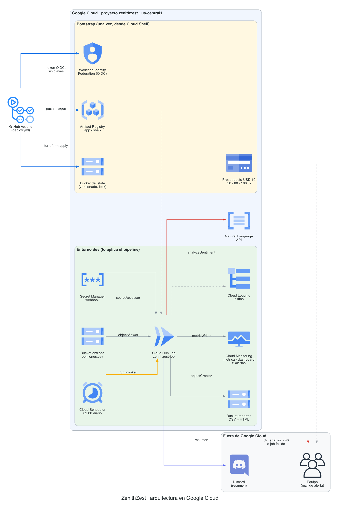
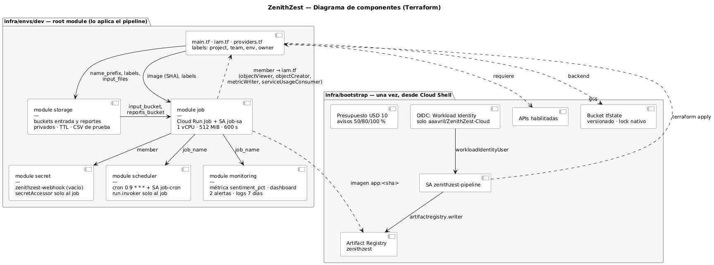
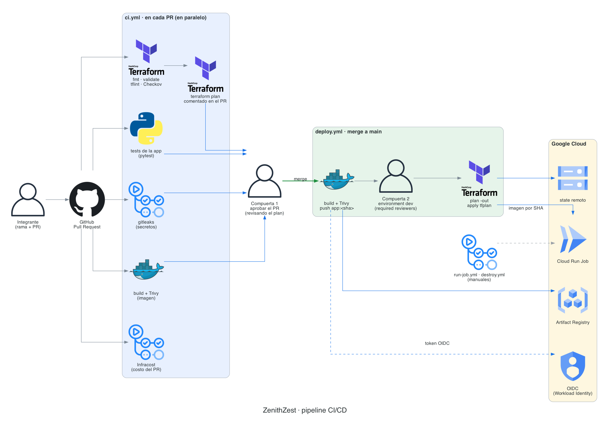
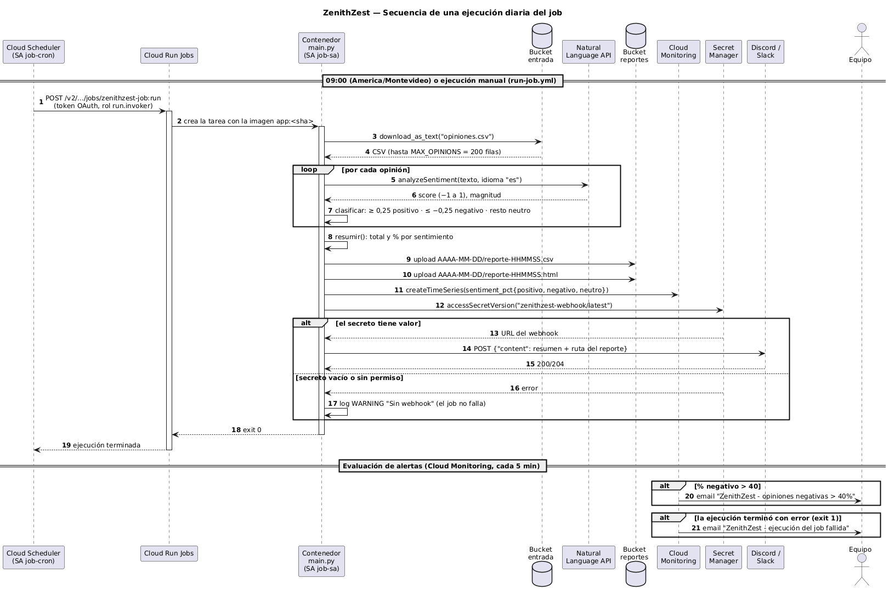
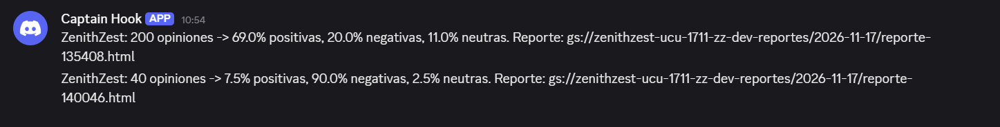
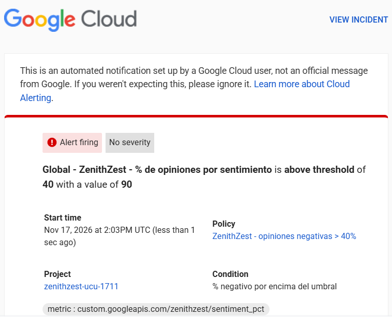
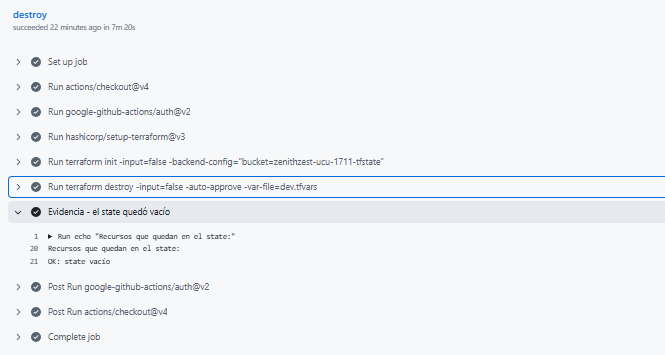
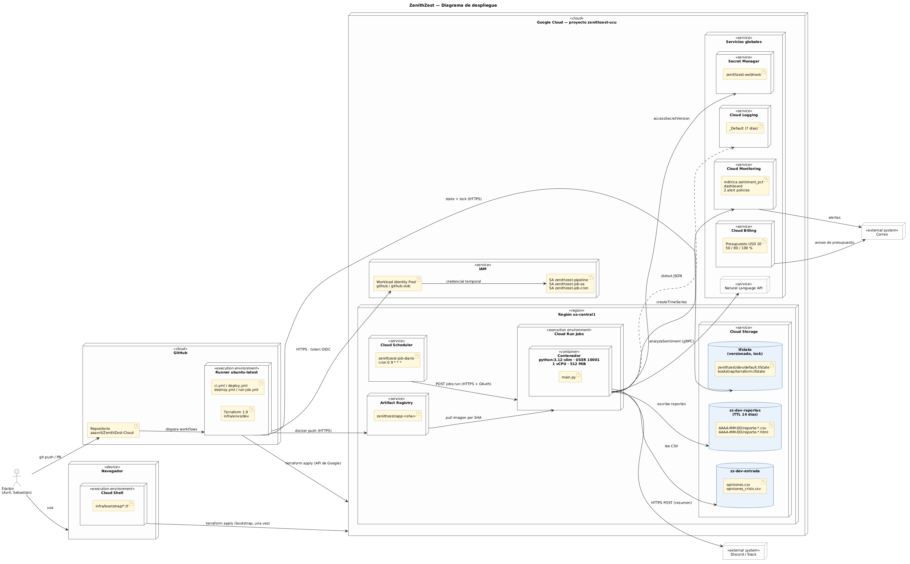
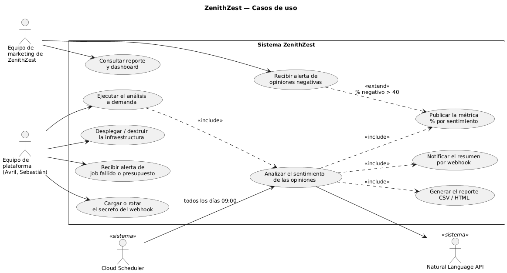
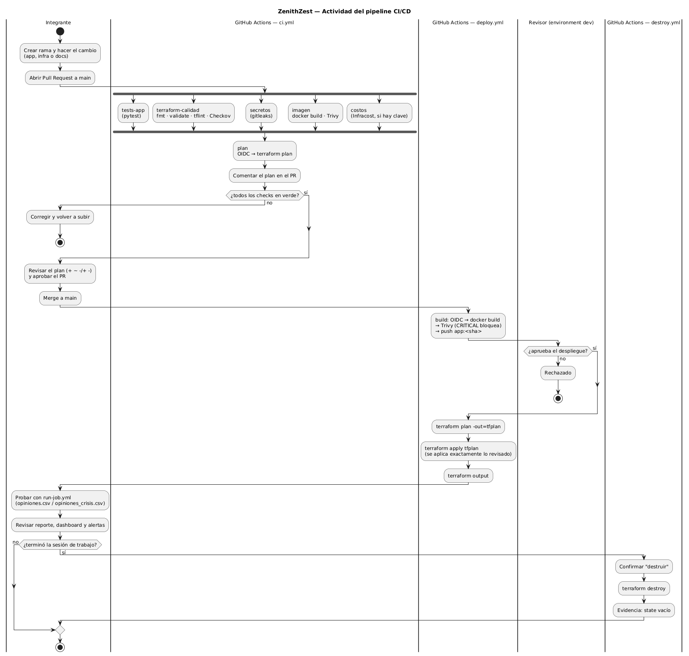

Cloud Computing · UCU · Proyecto integrador 7
Análisis de sentimiento de opiniones de clientes en Google Cloud, con toda la infraestructura en Terraform y despliegue por CI/CD.
Equipo: Avril Viega · Sebastián Cúneo
Repositorio: github.com/aaavril/ZenithZest-Cloud
Fecha: noviembre de 2026
ZenithZest es una empresa de jugos energéticos que quiere saber, todos los días, si lo que dicen sus clientes es positivo o negativo, sin que nadie tenga que leer opinión por opinión.
Construimos en Google Cloud un job de contenedor que corre una vez por día (y a demanda). El job lee un CSV de opiniones de un bucket privado, le pide el sentimiento de cada una a la Natural Language API, escribe un reporte CSV y HTML, publica el porcentaje positivo, negativo y neutro como métrica personalizada y manda un resumen a Discord. Si las opiniones negativas pasan del 40 %, Cloud Monitoring avisa por mail al equipo.
Toda la infraestructura está escrita en Terraform y se despliega con GitHub Actions, que entra a Google Cloud por OIDC, sin claves guardadas. Cada cambio pasa por pruebas, escaneos de seguridad y un plan revisado, y requiere dos aprobaciones humanas.
El informe tiene dos partes, separadas a propósito. La Parte A cubre la plataforma: proveedor, arquitectura, Terraform, CI/CD, seguridad, observabilidad y costos. La Parte B cubre la lógica de la aplicación, los resultados y cómo la desarrollamos, incluida la forma en que trabajamos con Claude como asistente de código.
| Paso | Qué hace | Servicio |
|---|---|---|
| 1. Leer | Hasta 200 opiniones de opiniones.csv, en un bucket privado | Cloud Storage |
| 2. Analizar | Puntúa cada opinión de −1 a 1 y la clasifica | Natural Language API |
| 3. Reportar | Tabla CSV y página HTML con el resultado del día | Cloud Storage |
| 4. Medir | % positivo, negativo y neutro en un dashboard | Cloud Monitoring |
| 5. Avisar | Resumen a Discord y alerta por mail si hay crisis | Secret Manager · Monitoring |
La aplicación es mínima a propósito: tiene menos de 150 líneas, que es el límite de la consigna. Lo que se evalúa es la plataforma que la hace funcionar.
Parte A
Dónde corre todo, cómo se crea con Terraform, cómo llega cada cambio a la nube y cómo se controlan la seguridad, la observabilidad y el costo.
Decisión: Google Cloud, con una sola región: us-central1.
| Criterio | Google Cloud (elegido) | AWS | Azure |
|---|---|---|---|
| Job de contenedor programado | Cloud Run Jobs + Cloud Scheduler: dos recursos | ECS Fargate, task definition, rol de ejecución y EventBridge Scheduler | Container Apps Jobs, que requiere environment y Log Analytics |
| OIDC desde GitHub (sin claves) | Workload Identity Federation, creada con Terraform | En AWS Academy no se pueden crear roles ni proveedores OIDC | Federación en Entra ID; Azure for Students puede limitarla |
| IA de lenguaje en español | Natural Language API | Comprehend | AI Language |
| Métrica, dashboard y alertas como código | Descriptor, dashboard JSON y alert policies en Terraform | CloudWatch (similar) | Application Insights (similar) |
| Costo con tráfico de prueba | Pago por uso; el job no cobra cuando no corre | Similar | El environment y Log Analytics suman piezas |
Es el proveedor donde este caso se arma con menos piezas y donde el requisito de OIDC sin claves se cumple sin las restricciones de las cuentas académicas de AWS. El costo de entrada fue que, en Uruguay, la prueba gratuita pidió un prepago de USD 30, reembolsable al cerrar la cuenta de facturación.
Si hubiera que migrar: el código está organizado en módulos por capacidad (storage, job, scheduler, secret, monitoring). Migrar significa reescribir el interior de cada módulo, no el diseño. Las equivalencias son Cloud Run Jobs → ECS Fargate o Container Apps Jobs, Secret Manager → Secrets Manager o Key Vault, Cloud Storage → S3 o Blob Storage.

docs/diagramas/nube.py (diagrams-as-code).| Servicio | Rol en la solución | Capa |
|---|---|---|
| Cloud Run Jobs | Corre el contenedor de Python hasta que termina; escala a cero | Entorno dev |
| Cloud Scheduler | Dispara el job a las 09:00 (America/Montevideo) con su propia identidad | Entorno dev |
| Cloud Storage (2 buckets) | Entrada (opiniones.csv, 30 días) y reportes (CSV + HTML, 14 días) | Entorno dev |
| Natural Language API | analyzeSentiment en español por opinión | API administrada |
| Secret Manager | Guarda la URL del webhook de Discord | Entorno dev |
| Cloud Monitoring | Métrica sentiment_pct, dashboard y dos alertas | Entorno dev |
| Cloud Logging | Logs estructurados en JSON, retención de 7 días | Entorno dev |
| Artifact Registry | Imágenes app:<sha>; conserva las últimas 5 | Bootstrap |
| Workload Identity Federation | Canjea el token OIDC de GitHub por credenciales temporales | Bootstrap |
| Bucket del state | State remoto de Terraform, versionado y con bloqueo nativo | Bootstrap |
| Presupuesto | USD 10 con avisos al 50, 80 y 100 % | Bootstrap |
public_access_prevention = enforced y acceso uniforme, sin ACL por objeto.| Decisión | Alternativa descartada | Motivo |
|---|---|---|
| Cloud Run Jobs | Cloud Run Service o Cloud Functions | Es un proceso batch que termina; no necesita un endpoint HTTP público |
| Bootstrap separado del entorno | Todo en un root module | El bucket del state, el registro y el OIDC tienen que existir antes del primer pipeline |
| Imagen por SHA del commit | latest | Trazabilidad y rollback; la variable image rechaza latest |
| Secreto vacío en Terraform | Versión del secreto con el valor | El valor quedaría en el state |
| Alerta de negocio y alerta técnica | Solo una | Una muestra el valor para el negocio y la otra la salud del job |
Directorio por entorno (envs/dev) | Workspaces | Aislamiento fuerte, como recomendaron en clase |
| El aviso a Discord no es bloqueante | Fallar el job si falla el aviso | Un paso secundario no debe tirar abajo un análisis que ya terminó bien |
Ningún recurso se creó a mano en la consola. Las únicas excepciones, que permite la consigna, son el bootstrap del state y la carga del valor del secreto. Terraform está organizado en dos capas:
| Capa | Qué crea | Quién la aplica | State |
|---|---|---|---|
infra/bootstrap | APIs, bucket del state, Artifact Registry, Workload Identity Federation, cuenta del pipeline y presupuesto (33 recursos) | Una vez, a mano, desde Cloud Shell | Local, con respaldo en el bucket |
infra/envs/dev | Todo lo demás, con 5 módulos por capacidad | El pipeline (deploy.yml) | Remoto en GCS |
El bootstrap crea el bucket donde vive el state remoto, así que su propio state no puede vivir ahí al principio. Queda local (terraform.tfstate, ignorado por Git), y después de aplicarlo se respalda con gcloud storage cp en gs://<proyecto>-tfstate/bootstrap/.
El entorno dev declara backend "gcs" con el prefijo zenithzest/dev. El nombre del bucket no está en el código: el pipeline lo pasa al iniciar, desde la variable del repositorio:
terraform init -backend-config="bucket=${{ vars.TF_STATE_BUCKET }}"
El state de dev queda en gs://<proyecto>-tfstate/zenithzest/dev/default.tfstate. GCS tiene bloqueo nativo y el bucket está versionado, así que dos ejecuciones no pueden pisarse y se puede volver a una versión anterior del state.
| Módulo | Recursos | Entradas y salidas clave |
|---|---|---|
storage | Buckets de entrada y reportes (privados, con TTL) y los CSV de prueba | → nombres de los buckets |
job | Cloud Run Job (1 vCPU, 512 MiB, max_retries = 1) y su cuenta de servicio | ← imagen por SHA, variables de entorno · → member |
secret | Secreto vacío y secretAccessor solo para el job | ← member del job |
scheduler | Cloud Scheduler, su cuenta y run.invoker solo sobre el job | ← nombre del job, cron, pausado |
monitoring | Descriptor de métrica, dashboard, 2 alertas, canales de mail y logs a 7 días | ← umbral, mails (sensibles) |

google ~> 6.0 y el lock file versionado en Git. Cada módulo tiene su versions.tf.project, team, env y owner en todos los recursos.latest.destroy.yml borra todo el entorno y muestra como evidencia que el state quedó vacío.
docs/diagramas/cicd.py.| Workflow | Cuándo | Qué hace |
|---|---|---|
ci.yml | En cada Pull Request | En paralelo: tests de la app; fmt, validate, tflint y Checkov (bloqueante); gitleaks; build de la imagen y Trivy (bloquea CRITICAL con parche disponible); Infracost. Después, terraform plan, que queda comentado en el PR. |
deploy.yml | Push a main (ignora cambios solo de documentación) | Build de la imagen app:<sha>, Trivy y push a Artifact Registry. Espera la aprobación en el environment dev, y después plan -out y apply tfplan: se aplica exactamente el plan revisado. |
run-job.yml | Manual | Ejecuta el job con opiniones.csv o con opiniones_crisis.csv. |
destroy.yml | Manual (hay que escribir "destruir") | terraform destroy y la evidencia de que el state quedó vacío. |
dev, que tiene a los dos integrantes como required reviewers.GitHub firma un token OIDC que dice de qué repositorio viene. Workload Identity Federation lo canjea por credenciales de Google que duran una sola ejecución, y solo si cumple la condición assertion.repository == "aaavril/ZenithZest-Cloud". En el repositorio no hay ninguna clave de cuenta de servicio: las variables de GitHub (GCP_WIF_PROVIDER, GCP_SERVICE_ACCOUNT, TF_STATE_BUCKET y otras) no son secretas.
Concurrencia: deploy y destroy comparten el grupo deploy-dev, así que nunca hay dos procesos sobre el mismo state. Los workflows tienen permissions: contents: read por defecto.
Principio: menor privilegio. Cada permiso se da sobre el recurso más chico posible, y ninguna identidad tiene claves descargables. La matriz completa, con la justificación de cada rol, está en el Anexo B.
| Identidad | Puede | Sobre |
|---|---|---|
Job (zenithzest-job-sa) | Leer (objectViewer) | Solo el bucket de entrada |
| Job | Crear archivos, sin leer ni borrar (objectCreator) | Solo el bucket de reportes |
| Job | Leer el secreto (secretAccessor) | Solo zenithzest-webhook |
| Job | Escribir métricas y consumir la API | Proyecto (no hay un rol más chico) |
Scheduler (zenithzest-job-cron) | Ejecutar (run.invoker) | Solo el job |
Pipeline (zenithzest-pipeline) | Desplegar (roles de administración) | El proyecto, por OIDC y solo desde este repo |
serviceAccountUser, projectIamAdmin y otros) porque crea la infraestructura. Se mitiga con el OIDC limitado al repositorio, credenciales que duran una ejecución, la aprobación manual del environment y ramas protegidas. Una mejora posible es un rol personalizado, o separar una cuenta de solo lectura para el plan de los PR.read -s, y nunca está en Git ni en el state.USER 10001), multi-stage, con base python:3.12-slim de versión fija.sensitive: el plan, que es público porque el repo lo es, muestra (sensitive value)..gitignore excluye state, planes, tfvars locales y archivos de credenciales.| Herramienta | Analiza | Resultado |
|---|---|---|
| Checkov | Terraform, Dockerfile y GitHub Actions | Primera corrida: 11 hallazgos. Se revisaron uno por uno y se justificaron en el código con #checkov:skip=<ID>:<motivo>. Desde entonces bloquea el merge: Terraform 48/0 (24 omitidos justificados), Dockerfile 30/0, Actions 232/0. |
| tflint | Reglas de Terraform y Google | Faltaban required_version y required_providers en los módulos. Corregido con un versions.tf por módulo. |
| Trivy | Vulnerabilidades de la imagen | 0 críticas con parche disponible. Las HIGH se reportan sin bloquear. |
| gitleaks | Secretos en el historial de Git | 0 hallazgos. |
| ID | Hallazgo | Decisión |
|---|---|---|
| CKV_GCP_62 | Buckets sin logs de acceso | Costo y ruido en pruebas; los cambios quedan en Cloud Audit Logs |
| CKV_GCP_78 | Buckets de datos sin versionado | Datos de prueba regenerables con TTL; el bucket del state sí está versionado |
| CKV_GCP_84 | Artifact Registry sin CMEK | Cifrado por defecto de Google; la imagen no tiene datos sensibles |
| CKV_GCP_41 / 49 | Roles de cuentas de servicio a nivel proyecto | Los necesita el pipeline; mitigado como se explica arriba |
| CKV_GCP_125 | OIDC sin condición sobre assertion.sub | Se restringe por assertion.repository, como recomienda Google |
| CKV_GHA_7 | workflow_dispatch con inputs | Los inputs no afectan ningún artefacto construido |
custom.googleapis.com/zenithzest/sentiment_pct, con la etiqueta sentiment (positivo, negativo o neutro).severity, message), con retención de 7 días. Permitieron diagnosticar en un minuto el primer error real (ver la bitácora).| Medida de ahorro | Dónde |
|---|---|
| Presupuesto de USD 10 con avisos al 50, 80 y 100 %, desde el día 1 | infra/bootstrap |
| Todo pago por uso: sin balanceador, NAT, base gestionada ni clúster | Arquitectura |
Tope de opiniones por corrida (max_opinions = 200) y scheduler pausable | dev.tfvars |
| Logs a 7 días; TTL de 30 días en entrada y 14 en reportes | Módulos monitoring y storage |
| Registro de imágenes: conserva las últimas 5 y borra las de más de 7 días | infra/bootstrap |
Imagen chica (slim, multi-stage) y una sola región | app/Dockerfile · variables |
destroy.yml al terminar cada sesión de trabajo | Workflow |
Entorno de pruebas: todos los servicios quedan dentro de la capa gratuita. La Natural Language API da 5.000 unidades por mes gratis: 200 opiniones por día durante 30 días son 6.000 unidades, así que con el scheduler pausado fuera de la demo queda dentro.
A escala: 10.000 opiniones por día son 300.000 unidades por mes. Restando la cuota gratuita, son unos USD 295 de la API de lenguaje; el resto suma alrededor de USD 1. Casi todo el costo es la API. Para bajarlo: deduplicar las opiniones, analizar solo lo nuevo y usar un modelo local para el grueso, dejando la API para los casos dudosos (ver el extra con VADER).
Parte B
Qué hace la aplicación, qué resultados dio en la nube y cómo la desarrollamos: la especificación de arquitectura que le dimos a Claude, qué generó y cómo lo verificamos y corregimos.
app/main.py tiene 145 líneas de Python 3.12 y se configura solo con variables de entorno, que le pasa Terraform: PROJECT_ID, INPUT_BUCKET, INPUT_OBJECT, REPORTS_BUCKET, SECRET_ID y MAX_OPINIONS.
| Función | Qué hace |
|---|---|
leer_opiniones | Lee el CSV, saltea las filas vacías y respeta el tope MAX_OPINIONS |
analizar | Llama a analyze_sentiment (idioma es) por cada opinión y guarda score y magnitud |
clasificar | score ≥ 0,25 es positivo, ≤ −0,25 es negativo y el resto, neutro |
resumir | Calcula el % de cada sentimiento (también con 0 opiniones) |
reporte_csv / reporte_html | Arma el reporte del día; el HTML escapa el texto de las opiniones |
publicar_metricas | Escribe tres puntos de sentiment_pct, uno por sentimiento |
notificar | Lee el webhook de Secret Manager y manda el resumen. Si falla, deja un WARNING y no hace fallar el job |
log | Una línea JSON por evento, que Cloud Logging interpreta |
Manejo de errores: cualquier error del flujo principal queda registrado como ERROR y el programa sale con código 1. Cloud Run reintenta una vez y, si vuelve a fallar, se dispara la alerta técnica.
Contenedor: Dockerfile multi-stage. La primera etapa instala las dependencias y la imagen final solo copia las librerías y main.py, corre como usuario sin privilegios y no tiene herramientas de build.
Pruebas (app/tests, 6 tests, corren en cada PR): el umbral de clasificación, el tope y las filas vacías, los porcentajes (también vacíos), que un webhook que responde 403 no haga fallar el job y que el reporte HTML escape el contenido.
Datos de prueba: scripts/generar_opiniones.py genera opiniones.csv (200 opiniones variadas) y opiniones_crisis.csv (40, mayormente negativas, para disparar la alerta).

run-job.yml), Cloud Scheduler hace POST …/jobs/zenithzest-job:run con un token OAuth de su propia cuenta.AAAA-MM-DD/reporte-HHMMSS.csv y .html en el bucket de reportes.Todo esto ocurrió el 17/11/2026 en el proyecto real (zenithzest-ucu-1711).

El generador de datos apuntaba a una distribución de 55 / 25 / 20. La diferencia viene de frases que una persona leería como neutras y la API puntuó levemente positivas: "está en promoción esta semana" (0,50) o "sacó un sabor nuevo" (0,70). El umbral de clasificación (±0,25) es una decisión de negocio, no un detalle técnico.


destroy.yml en verde: el paso de evidencia confirma que el state quedó vacío. Solo queda el bootstrap, con costo casi nulo.La consigna propone comparar la API con un modelo local simple. scripts/comparar_modelos.py toma el reporte CSV de la corrida real y lo compara con VADER (vaderSentiment 3.3.2), un modelo gratuito que suma el puntaje de cada palabra según un diccionario en inglés. Le agregamos un léxico de unas 60 palabras en español y las negaciones del español. Corre en la laptop, sin costo.
Coincidencia VADER vs. API: 91 % (182 de 200).
| API \ VADER | positivo | negativo | neutro |
|---|---|---|---|
| positivo | 120 | 0 | 18 |
| negativo | 0 | 40 | 0 |
| neutro | 0 | 0 | 22 |
Conclusión: un modelo local adaptado coincide en 9 de cada 10 opiniones sin costo por uso. Es la palanca principal de FinOps a escala: usar el modelo local para lo obvio y la API solo para lo dudoso. La limitación es que el dataset es sintético; con opiniones reales la coincidencia sería menor.
Usamos Claude (Claude Code, el asistente de programación de Anthropic) para escribir el código. La regla fue que la arquitectura la definíamos nosotros antes de que se escribiera una línea: Claude la implementaba, y nosotros revisábamos, desplegábamos y aprobábamos cada cambio.
| Etapa | Qué hicimos |
|---|---|
| 1. Arquitectura primero | A partir de la consigna, fijamos las decisiones de la tabla siguiente: proveedor, servicios, capas de Terraform, seguridad, pipeline y costos. Esa fue la especificación que le dimos a Claude. |
| 2. Plan mode | Le pedimos a Claude un plan, sin tocar archivos: estructura de carpetas, módulos, workflows y documentación. Revisamos el plan contra la consigna y nuestras decisiones, y lo corregimos antes de aprobarlo. |
| 3. Ejecución y verificación | Claude generó el código del plan aprobado. Lo verificamos localmente, con Docker, antes de subir nada: fmt, validate, tflint, Checkov y los tests (14/11). |
| 4. Iteración en la nube | Después fue ir probando: seguir los pasos de despliegue en la nube real y, cuando algo fallaba, llevarle el error (logs de Actions o de Cloud Logging) a Claude, discutir la causa, aplicar la corrección por PR y volver a probar. Cada problema quedó en la bitácora (4.6). |
| Tema | Decisión predefinida por el equipo |
|---|---|
| Proveedor | Google Cloud, una sola región (us-central1), con la elección justificada frente a AWS y Azure. |
| Cómputo | Un job batch en Cloud Run Jobs, disparado por Cloud Scheduler a las 09:00. Sin servicio HTTP ni endpoint público. |
| Aplicación | Python, menos de 150 líneas, configurada solo con variables de entorno, logs estructurados en JSON y tests de la lógica pura. |
| Terraform: capas | Dos capas: bootstrap (una vez, a mano) y envs/dev (lo aplica el pipeline). Un directorio por entorno, no workspaces. |
| Terraform: módulos | Un módulo por capacidad: storage, job, scheduler, secret y monitoring. Los permisos del job, en un iam.tf aparte. |
| State | Remoto en GCS, versionado y con bloqueo. El nombre del bucket no se versiona: se pasa con -backend-config. |
| Estándares de IaC | Versiones fijadas con lock file; etiquetas project, team, env y owner en todo; todas las variables con tipo, descripción y validación. |
| Imágenes | Etiquetadas con el SHA del commit, nunca latest. Dockerfile multi-stage, usuario sin privilegios. |
| Identidad | GitHub entra por OIDC (Workload Identity Federation), limitado a este repositorio. Ninguna clave de cuenta de servicio. |
| IAM | Tres identidades (pipeline, job y scheduler), cada permiso sobre el recurso más chico posible. |
| Secretos | Terraform crea el secreto vacío; el valor se carga por CLI y nunca pasa por Git ni por el state. |
| Datos | Buckets privados (prevención de acceso público, acceso uniforme) con borrado automático. |
| CI/CD | En cada PR: tests, fmt, validate, tflint, Checkov, gitleaks, Trivy y el plan comentado. Deploy con aprobación del environment, aplicando exactamente el plan revisado. Destroy manual con evidencia. |
| Observabilidad | Métrica de negocio personalizada, dashboard, una alerta de negocio (> 40 % negativas) y una técnica (job fallido). |
| FinOps | Presupuesto desde el día 1, todo escala a cero, tope de opiniones, retenciones cortas y destroy al terminar cada sesión. |
| Documentación | Diagramas como código (PlantUML y Python diagrams) y una bitácora de problemas. |
| Área | Lo que generó Claude | Lo que hicimos nosotros |
|---|---|---|
| Terraform | El bootstrap, los 5 módulos y el root module de dev, con validaciones, etiquetas y los #checkov:skip justificados | Definir el diseño, revisar el plan comentado de cada PR y aplicar el bootstrap desde Cloud Shell |
| CI/CD | Los cuatro workflows (ci, deploy, run-job y destroy) | Configurar las variables y el environment en GitHub, y aprobar cada PR y cada deploy |
| Aplicación | main.py, los tests, el Dockerfile y el generador de datos | Fijar el umbral y el comportamiento ante fallos; correr el job en la nube |
| Correcciones | La causa probable y el arreglo de cada error que le llevamos | Reproducir el error, leer los logs, decidir si el arreglo era correcto y probarlo de nuevo |
| Documentación | Borradores de los documentos, los diagramas y este informe | Revisar el contenido contra lo que realmente pasó |
| Pasos manuales | Las instrucciones paso a paso | Crear la cuenta y el proyecto, pagar el prepago, cargar el secreto y probar la alerta |
| Fecha | Qué pasó |
|---|---|
| 14/11 | Código, Terraform (bootstrap y 5 módulos), workflows y documentación, validados localmente con Docker. |
| 16/11 | Repo en GitHub. Validaciones en todas las variables, Infracost, comparación con VADER y diagrama de arquitectura. |
| 17/11 | Cuenta de Google Cloud, bootstrap (33 recursos), variables y environment. Primer deploy en verde. Primer run-job en rojo por Discord; corregido. Segunda corrida en verde, alerta de crisis disparada y destroy con el state vacío. |
| Problema | Causa | Solución y aprendizaje |
|---|---|---|
run-job #1 en rojo tras ~4 min | Discord respondió 403: rechaza pedidos sin User-Agent propio. El error no estaba atajado, el job salió con código 1 y se reintentó. | User-Agent propio y aviso no bloqueante, con un test. Un paso secundario no debe tirar abajo el principal. |
| Los logs de GitHub pedían iniciar sesión | GitHub exige autenticación para descargar logs | Se leyó el error en Cloud Logging: los logs JSON mostraron en un minuto hasta dónde llegó el job. |
| El primer PR falló en Checkov (CKV_GCP_125) | La acción baja la última versión (3.4.5); localmente se usaba la 3.2 | Justificado en el código. Conviene fijar la versión del escáner en CI. |
| El plan en el PR mostraba los mails del equipo | El repo es público y el plan imprime los valores | alert_emails pasó a sensitive. Los datos personales también son sensibles. |
tflint --init con 403 por límite de API | El plugin se baja de GitHub sin token, con límite por IP | Se le pasa GITHUB_TOKEN. |
El destroy quedó en cola | Un deploy de documentación esperaba aprobación con la misma concurrencia | Se rechazó ese deploy y se agregó paths-ignore para los cambios de docs. |
| Las primeras corridas de deploy, en rojo | Todavía no existían ni el proyecto ni las variables | Primero el bootstrap y después el pipeline. |
| Terraform no venía en Cloud Shell | Cloud Shell dejó de incluirlo | Binario oficial 1.9.8, verificando el SHA256, la misma versión que CI. |
git clone pedía contraseña | El repo era privado | Se hizo público: no tiene secretos y el acceso a la nube está limitado por OIDC. |
| Prepago de USD 30 en la prueba gratuita | Condición de Google para Uruguay | Se pagó (es reembolsable). Hay que verificar las condiciones del proveedor antes de elegirlo. |
| VADER: 85 % de coincidencia | Falso amigo: "sin" = "pecado" en inglés | Se corrigió en el léxico y subió a 91 %. Hay que mirar los ejemplos, no solo el porcentaje. |
Cinco diagramas escritos como código en PlantUML (docs/uml/*.puml). El de componentes (Figura 2) y el de secuencia (Figura 4) están en el cuerpo del informe; acá van los otros tres.



| Identidad | Rol | Recurso | Justificación |
|---|---|---|---|
| zenithzest-job-sa | storage.objectViewer | Bucket entrada | Leer opiniones.csv. No puede escribir ni borrar. |
| zenithzest-job-sa | storage.objectCreator | Bucket reportes | Crear los reportes. No puede leerlos, sobrescribirlos ni borrarlos. |
| zenithzest-job-sa | secretmanager.secretAccessor | Secreto del webhook | Leer la URL del webhook; solo ese secreto. |
| zenithzest-job-sa | monitoring.metricWriter | Proyecto | Publicar la métrica. No hay rol a nivel de métrica; no permite leer ni borrar. |
| zenithzest-job-sa | serviceusage.serviceUsageConsumer | Proyecto | Consumir la Natural Language API facturando al proyecto. |
| zenithzest-job-cron | run.invoker | Job | Ejecutar solo ese job; no puede cambiarlo ni ver otros. |
| zenithzest-pipeline | iam.workloadIdentityUser | La propia cuenta | Solo los tokens OIDC de este repositorio pueden usarla. |
| zenithzest-pipeline | artifactregistry.writer | Repositorio zenithzest | Subir imágenes. |
| zenithzest-pipeline | run.admin | Proyecto | Crear y actualizar el job, y ejecutarlo. |
| zenithzest-pipeline | storage.admin | Proyecto | Crear los buckets y leer y escribir el state. |
| zenithzest-pipeline | cloudscheduler.admin | Proyecto | Crear el programador. |
| zenithzest-pipeline | secretmanager.admin | Proyecto | Crear el secreto vacío y su IAM. |
| zenithzest-pipeline | monitoring.editor | Proyecto | Métrica, dashboard, alertas y canales. |
| zenithzest-pipeline | logging.configWriter | Proyecto | Retención de 7 días del bucket _Default. |
| zenithzest-pipeline | iam.serviceAccountAdmin | Proyecto | Crear las cuentas del job y del scheduler. |
| zenithzest-pipeline | iam.serviceAccountUser | Proyecto | Asignar la cuenta del job al job (actAs). |
| zenithzest-pipeline | resourcemanager.projectIamAdmin | Proyecto | Darle al job metricWriter y serviceUsageConsumer. |
| Integrantes | Owner | Proyecto | Bootstrap y carga del secreto. Fuera de eso, todo cambio pasa por PR y pipeline. |
Para verificarlo en la demo:
gcloud storage buckets get-iam-policy gs://<proyecto>-zz-dev-entrada gcloud secrets get-iam-policy zenithzest-webhook gcloud run jobs get-iam-policy zenithzest-job --region us-central1
gcloud projects create, vincular la facturación y gcloud config set project.bootstrap.tfvars, después terraform init y terraform apply en infra/bootstrap, y respaldar el state local en el bucket.terraform output): GCP_PROJECT_ID, GCP_REGION, GCP_WIF_PROVIDER, GCP_SERVICE_ACCOUNT, TF_STATE_BUCKET, IMAGE_REPO y ALERT_EMAILS.dev, con los dos integrantes como required reviewers.main: deploy.yml construye la imagen y, después de la aprobación, aplica.printf '%s' "$URL" | gcloud secrets versions add zenithzest-webhook --data-file=-run-job, y ver el reporte, el dashboard y Discord.destroy, escribir "destruir". El bootstrap se borra al final del curso.